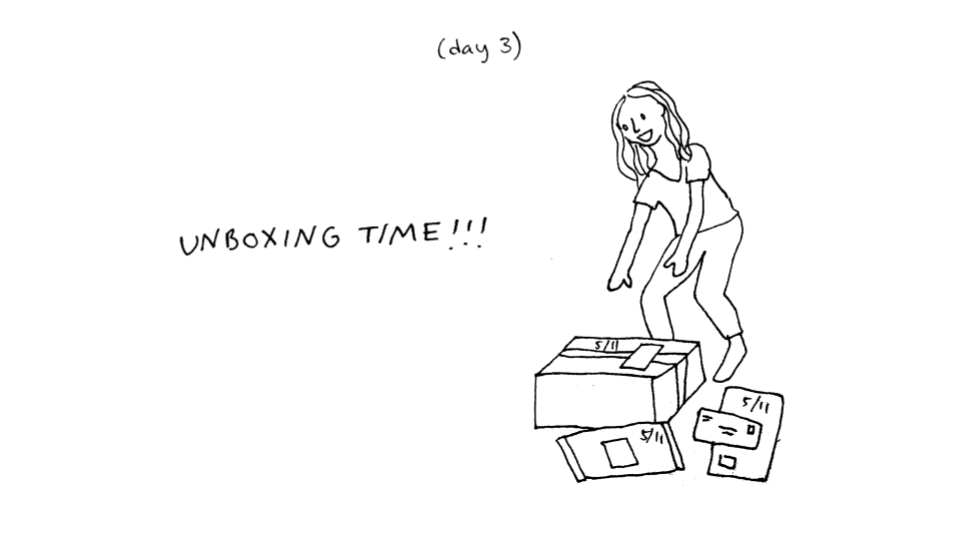

Harvard Chicken Survey
Just for fun, I decided to survey Harvard students on their favorite chicken dishes and create an interactive display of the results using D3. I learned about ranked choice voting algorithms and discovered that chicken parmesan is the top favorite chicken dish among the students surveyed.

Quarantine Comic
Quarantine Comic is a webcomic I wrote about my experiences in quarantine and reflections on college.
It discusses loneliness, loss, boredom, uncertainty, and the surprising joys of quarantine.

Computer-generated art
I create computer-generated art using D3.
I take inspiration for my designs from modern and abstract art. The images are generated
from random numbers and I post the best ones on Instagram as @geometric_squares. My aim
is to create a wide variety of art that doesn't look computer-generated. I also built an Instagram
bot using Selenium to help manage the account.

Art Portfolio
My hobbies have always included making things with my hands. I built this portfolio
to showcase my non-digital visual projects, including paintings, costumes, sketches, and 3-dimensional works.
The costume pictures are from college, during which I spent two years designing, sourcing, and constructing costumes
for 6 different student shows.

The Visual Q
The Visual Q is a visual exploration tool for Harvard's course review system, the Q Guide.
It was built with D3 and allowed students to visually navigate Harvard's course offerings, mark their
favorite courses, see course review data over time, and compare different departments.
I created this project with Jan Geffert and Matt Jiang and we won Best Project Award in
Harvard's CS171: Visualization in Fall 2018.